Data Sets & Catalog
Load a large data set, catalog it for reuse across the organization, and subscribe to a published catalog data set as a consumer.
What you'll cover
- Load Large Data Set
- Cataloging of Data Sets
- Subscribing to a Data Set
Load Large Data Set
Login the the Boomi Data Catalog and Preparation solution here: . Make sure the instructor has created an account for you and you have the credentials.
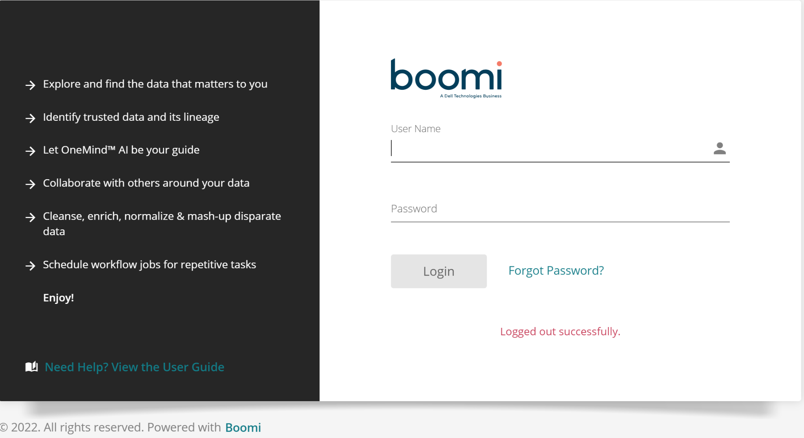
Enter your credentials and click Login.
Click on Data Sets and explore your data
Pull up the Account Salesforce object and profile the data. Click on the Columns heading and continue to click on the greater than symbol
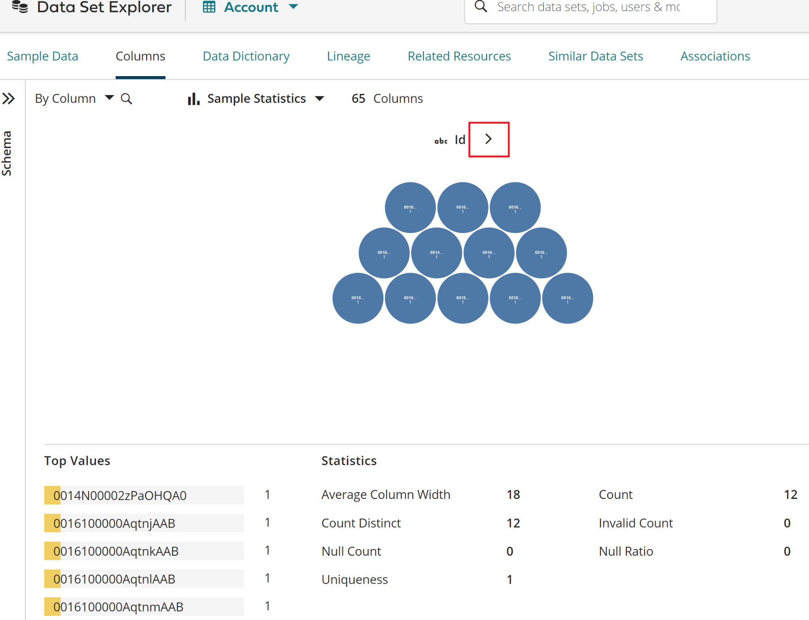
In the menu bar on the left, click Prepare -> Jobs
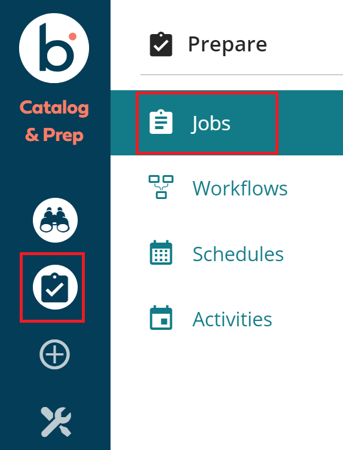
In the Jobs page, click on the Duplicate Snowflake to Snowflake Job,
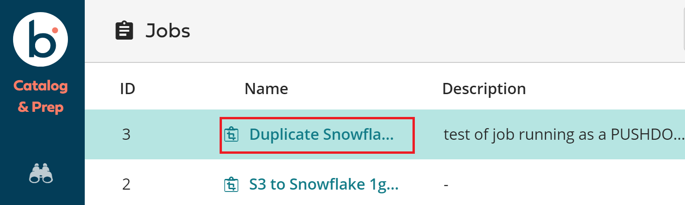
Click on the Output step in the upper right of the screen . Notice that we are using Snowflake pushdown optimization and sending 1 Gig of data to a new table. Click on the arrow down link to see all of the source fields to target field mappings.
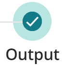
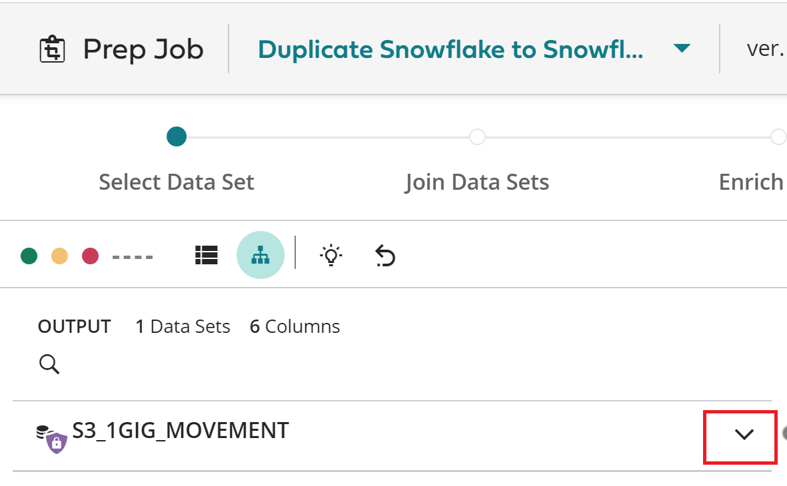
When you see this screen, click on the Run button to start the job.
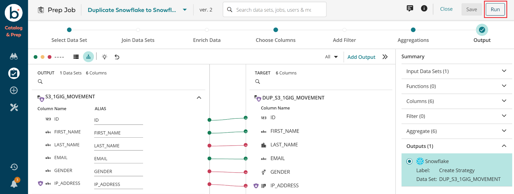
After the job finished (about 10 seconds), click on the Summary, Output, Input, and Lineage tabs to see everything about this DCP Prep Job.
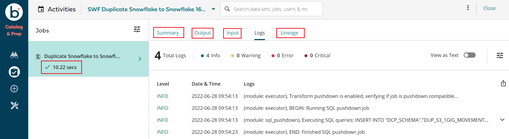
When you click on the Lineage tab, you will see where each field came from.
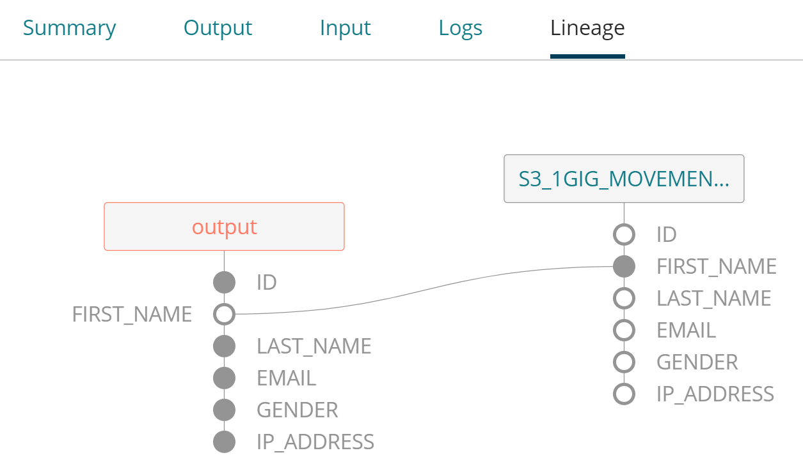
Feel free to go back to Prepare -> Jobs, to run the prep job that loads a Snowflake table from a 1 Gig file in an S3 bucket called S3 to Snowflake 1gig movement. This prep job will take a little longer to execute.
Cataloging of Data Sets
Go to Explore -> Data Set Explorer.
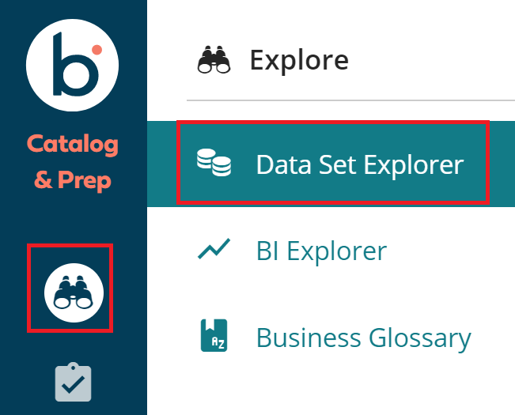
In the upper right corner of the Data Set Explore, click on the Create Data Set button.
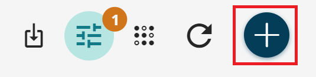
In the Create Data Set dialog, select Service from the Type dropdown, Salesforce Dev Account from the Data Source drop down. When you do this, all of the available objects in this Salesforce account will be available to search and import. Import any object, like the Opportunity object. Enter letters slowly in the search field as the results dynamically appear based on each letter added/removed. Once you highlighted the object(s) you want to import, click Import. This starts a background job to perform the import.
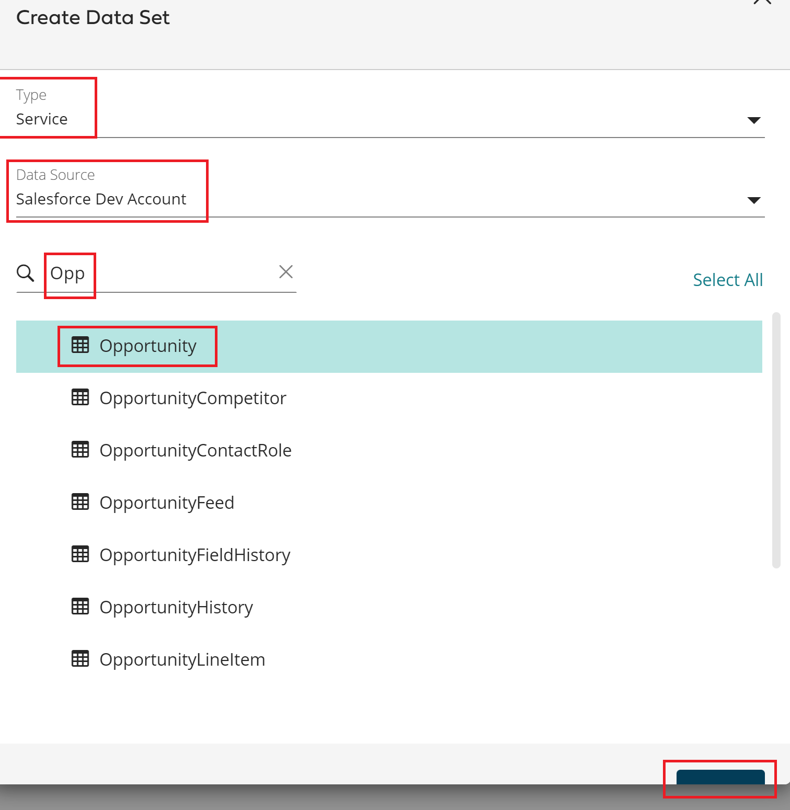
Go to the Data Set Explore to see and profile the data by clicking on it.
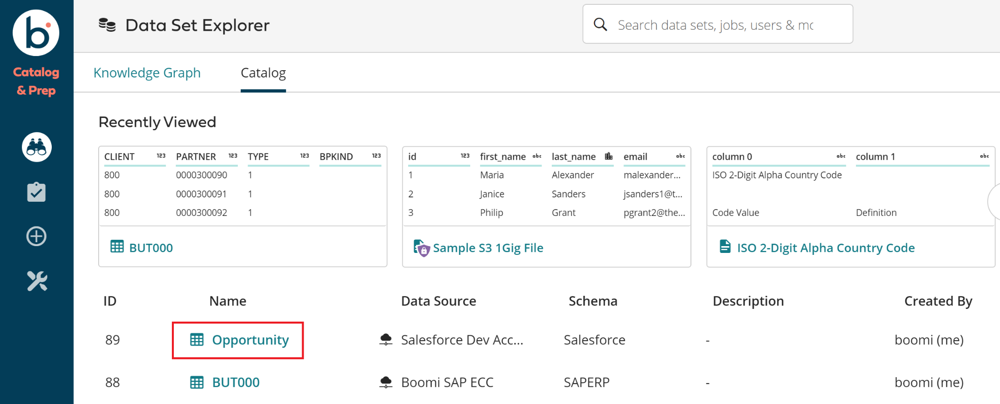
DCP will automatically calculate statistics for a sample data set. Once it is done and the clears, you can click on each column to see a graphical summary of the data, for example click on the StageName column. Go through each of the tabs at the top: Columns, Data Dictionary, Lineage, Related Resources, Similar Data Sets, and Associations. There is a lot of profile data statistics. Any number of Data Sources can be automatically introspected and discovered to curate and govern access to your data.
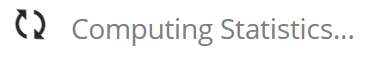
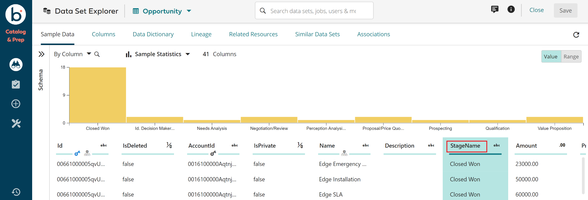
Subscribing to a Data Set
In this exercise, we will login to Boomi DCP as a non-admin user and request access to any data set.
Login to Boomi DCP: and logout if you are already logged in. Login as a Data Analyst: Username: raccess and Password: Boomi1234!
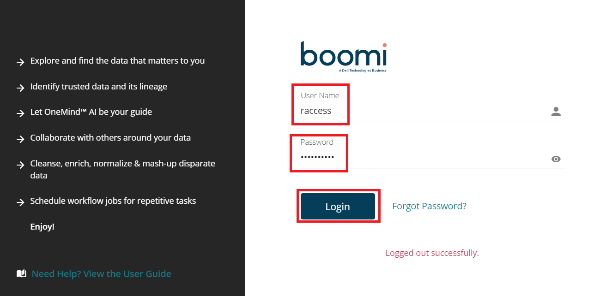
Go to the Data Set Explorer.
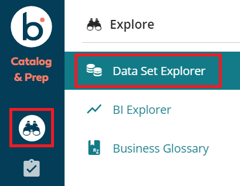
Click on any Data Set that you see the padlock icon to the right ( )to highlight it (don’t click on the Data Set in the Name column). Once the Data Set is highlighted, in the Details panel to the far right, click the opened padlock icon ( ) to request access to the highlighted data set.
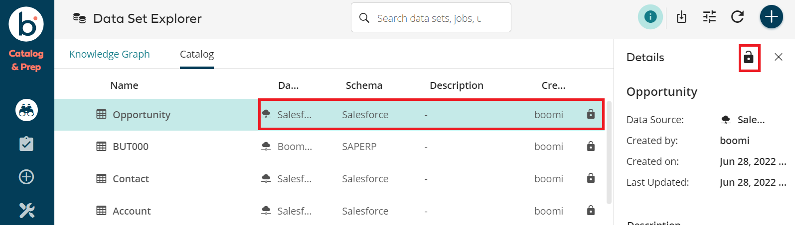
Notice when you first hover over the open padlock icon it displays , and after you click it, it shows . Now logout as the raccess user by clicking the Sign Out button in the lower left corner of the screen: .
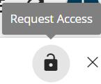
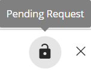
Now login as the owner of the data sets: Username: boomi and Password: B00mi@2022.
Notice you see that you have notifications from the bell icon in the lower left side bar . When you click the bell, you should see all of your notifications.
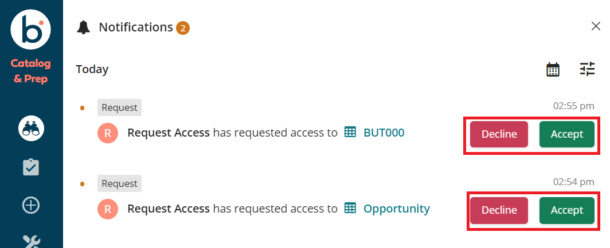
Click on the Accept button to grant access to the data set to that user.
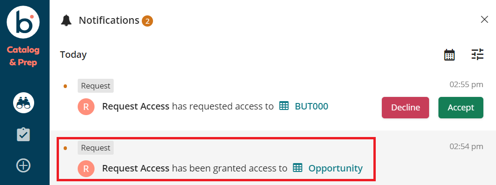
Now you can logout of the data set owner and login as the data set requestor (raccess), go to the Data Set Explorer, and see that you can now access the data set, including viewing the data.
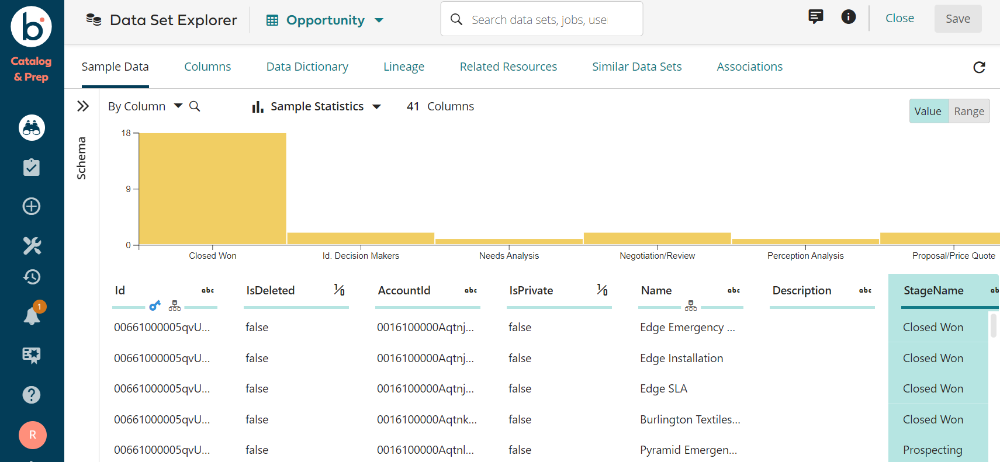